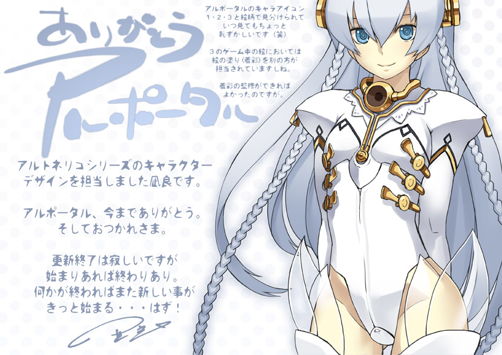
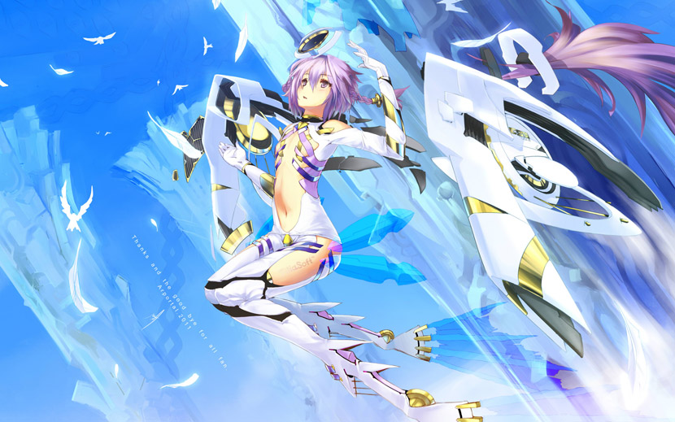
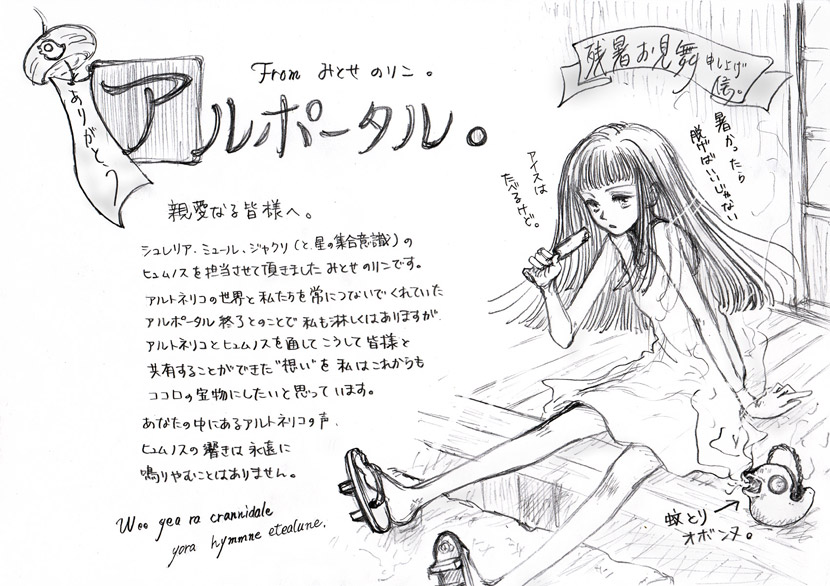
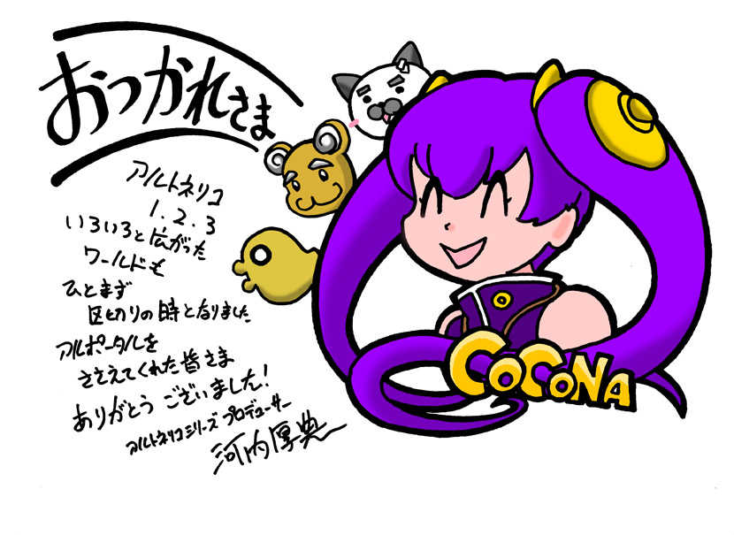
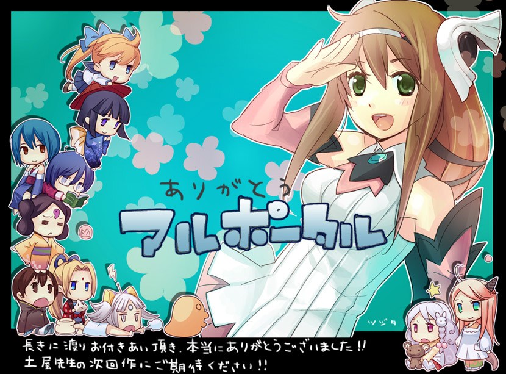

| ◆アルトネリコシリーズ ヒュムノス担当 志方あきこ コメント◆ |
|---|
|
皆さんこんにちは、志方です。
「詩と物語の織りなす世界」という、一風変わった魅力的な世界観を持つアルト
ネリコ。私にとっても思い入れの深い、そしてお気に入りの世界が今、ひとまず
の終わりを迎えようとしています。このお知らせを初めて土屋さんから聞かされ
た時には、ビックリすると共に、とても寂しく、名残惜しい気持ちで一杯になり
ました。
アルトネリコ発売前の2005年、初めてその世界観を見せていただいたとき、「こ
の世界で音楽を奏でたい！」という想いが心の底から湧いてきたことは、今でも
昨日のことのように覚えています。
この「想いと詩の世界」アルトネリコは、私の心の中で素敵な宝石箱となって、
ずっと自分に元気を与え続けてくれました。これからもずっと大切に抱えていく
のだと思います。時折それを開いては、その中に散らばる沢山の綺麗な宝石…世
界、キャラクター、そして皆様の想いを眺めて楽しむ事でしょう。そしてそれが、
これからもずっと、新しい作品や、毎日の元気を創り出してくれるに違いありま
せん。
皆様にとって、私にとっても大切なアルトネリコとアルポータルに、そしてアル
トネリコを好きになって下さった皆様に、盛大な感謝の気持ちを込めて、最後の
言葉とさせていただきます。
Was yea erra yanje pitod ciel en yos hymmne... |
| ◆アルトネリコシリーズ ヒュムノス担当 霜月はるか コメント◆ |
|---|
|
皆ありがとう、アルポータル！ いつもアルトネリコを応援してくれている皆様、こんにちは。１でオリカ、２で
ルカ、３でフィンネル等のヒュムノスを担当させて頂きました、霜月はるかです。
アルトネリコシリーズでは、ボーカリストとしてだけでなく音楽制作から作品に
深く関わらせて頂き、世界創造の一部を担い、得難い経験をさせて頂きました。
本当に、大切な作品です。
この度、皆様との懸け橋となってくれていたアルポータルが終了とのことで、私
もとても寂しい気持ちです。とてもユーザーの方との距離が近く、単なる情報サ
イトではない、交流の場として存在してくれていたと思います。ありがとう、お
疲れさま！ 霜月はるか |
| ◆アルトネリコシリーズ 音楽音響制作 セイムクリエイティブ 田畑 三津広 コメント◆ |
|---|
|
皆様、いままで長きにわたってアルポータルを応援いただきありがとうございました。 アルトネリコシリーズでは１、２で音楽制作や音響制作を担当させていただきましたセイムクリエイティブという制作会社の田畑と申します。 実は、この場をおかりしましてユーザーの皆様に報告があります。 アルポータルはここをを通じてユーザー様と距離が身近に感じられ大変すばらしいサイトでした。 セイムクリエイティブ 田畑三津広 |
| ◆アルトネリコシリーズ イラストレーター 凪良 コメント◆ |
|---|
|  |
| ◆アルトネリコシリーズ 3Dモデル製作 ntny コメント◆ |
|---|
|  |
| ◆アルトネリコシリーズ ヒュムノス担当 みとせ のりこ コメント◆ |
|---|
|  |
| ◆アルトネリコシリーズ プロデューサー 河内 厚典 コメント◆ |
|---|
|  |
| ◆アーランドシリーズディレクター 岡村 佳人 コメント◆ |
|---|
|
さよならアルポータル！いままで応援ありがとうございました！ |
| ◆アルトネリコシリーズ ライター 富松元気 コメント◆ |
|---|
|
毎日投稿をチェックする日々に終わりが来ようとしている。 |
| ◆デザイナー 辻田 裕子 コメント◆ |
|---|
|  |
アルポータル ｜アルトネリコ３公式サイト ｜ガストショップ
©GUST CO.,LTD. 2011 ©NBGI